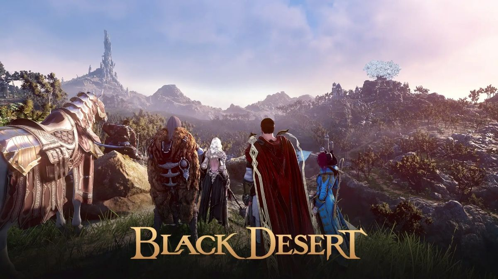

ライト
FHD 高画質
- 予算目安 18万円前後
- CPU Ryzen 7 5700X
- GPU RTX 5060 Ti
フルHDで黒い砂漠を綺麗に楽しみたい人向けです。

RECOMMENDED BUILDS
黒い砂漠は遊び方によって負荷が変わりやすいため、少し余裕のある構成を選ぶと長く快適に使えます。
ライト
フルHDで黒い砂漠を綺麗に楽しみたい人向けです。
ミドル
WQHDで美しいグラフィックを楽しみたい人向けです。
SHOP LINKS
現在、販売サイトへのリンクを準備しています。公開後はこのエリアから確認できます。
RECOMMENDED
FHD〜WQHD / 高画質
BUDGET
18万〜30万円前後
POINT
黒い砂漠は画質設定によって負荷が大きく変わるため、綺麗な映像で遊びたいならGPU性能を重視したいゲームです。
CAUTION
人が多い場所や高画質設定ではfpsが下がりやすいため、少し余裕のある構成がおすすめです。